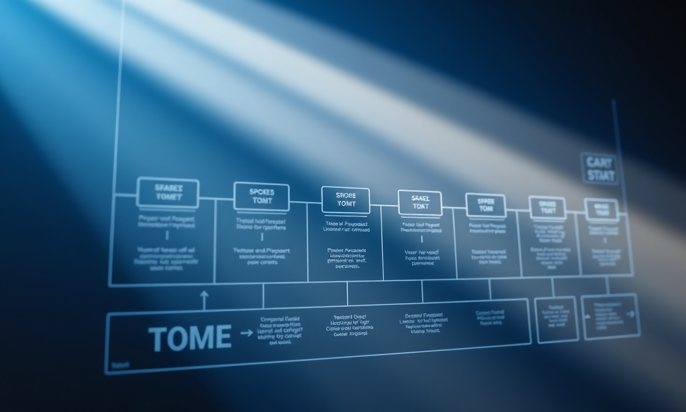

L'optimisation des conversions (CRO) est un levier essentiel pour toute entreprise qui veut maximiser le retour sur investissement de son trafic web. Au Maroc, la concurrence digitale s'intensifie, et il ne suffit plus d'attirer des visiteurs : il faut les convertir en clients. C'est là qu'interviennent les tests A/B, une méthode scientifique qui compare deux versions d'une page ou d'un élément pour voir laquelle performe le mieux. Chez DatRey, agence digitale à Casablanca, on utilise cette approche pour aider nos clients à prendre des décisions éclairées et à améliorer leurs indicateurs de performance.
Qu'est-ce qu'un test A/B ?
Un test A/B, aussi appelé split testing, consiste à montrer deux variantes (A et B) d'une même page à des segments d'audience aléatoires, puis à mesurer laquelle génère le meilleur taux de conversion. La version gagnante est ensuite déployée. Cette méthode repose sur des données réelles et élimine les suppositions.
Pourquoi utiliser les tests A/B ?
- Amélioration continue : chaque test apporte un apprentissage.
- Réduction des risques : les décisions sont basées sur des preuves.
- Augmentation du ROI : de petites modifications peuvent avoir un impact important.
Les éléments clés à tester
Pour optimiser vos conversions, concentrez-vous sur les éléments qui influencent directement le comportement des utilisateurs :
Vous souhaitez appliquer ces strategies sans effort ? Nos experts DatRey s'en chargent.

| Élément | Exemples de variations |
|---|---|
| Titres | Formulation, longueur, ton |
| Appels à l'action (CTA) | Couleur, texte, emplacement |
| Images | Type (produit, lifestyle), taille |
| Formulaires | Nombre de champs, design |
| Preuve sociale | Témoignages, avis, nombre de clients |
Selon une étude de MarketingSherpa, 68% des entreprises constatent une amélioration de leurs conversions grâce aux tests A/B. Ne négligez donc pas cette pratique.
Notre méthodologie CRO chez DatRey
Chez DatRey, on suit un processus en 5 étapes pour garantir des résultats probants :
- Analyse : repérer les points de friction avec des outils comme Google Analytics et des heatmaps.
- Hypothèse : formuler une hypothèse basée sur les données collectées.
- Création : développer les variantes A et B.
- Expérimentation : lancer le test avec une durée suffisante pour atteindre la significativité statistique.
- Implémentation : déployer la version gagnante et documenter les apprentissages.
Cette approche systématique permet d'éviter les biais et d'optimiser chaque étape du parcours client.
Erreurs courantes à éviter
- Tester trop d'éléments à la fois : privilégiez un seul changement par test.
- Arrêter le test trop tôt : attendez un échantillon suffisant pour valider les résultats.
- Ignorer le contexte : tenez compte des saisonnalités et des campagnes en cours.
En moyenne, les entreprises qui adoptent une culture du test constatent une augmentation de 30% de leur taux de conversion sur un an (Source : Invesp).
Cas pratique : un site e-commerce marocain
Prenons l'exemple d'un client de DatRey, une boutique en ligne de vêtements basée à Casablanca. Le taux de conversion initial était de 1,5%. Après avoir testé un nouveau design de page produit (version B avec un CTA plus visible et des avis clients mis en avant), le taux est passé à 2,3%, soit une augmentation de 53%. Ce simple test A/B a généré un chiffre d'affaires supplémentaire significatif.
FAQ
Combien de temps doit durer un test A/B ?
La durée idéale dépend de votre volume de trafic. En règle générale, prévoyez au moins une à deux semaines pour collecter suffisamment de données et atteindre une significativité statistique.
Quels outils utiliser pour les tests A/B ?
On recommande Google Optimize (gratuit), Optimizely ou VWO. Ces plateformes facilitent la mise en place et le suivi des expériences.
Les tests A/B sont-ils adaptés aux petites entreprises ?
Oui, absolument. Même avec un trafic modéré, vous pouvez tester des éléments simples comme le texte d'un bouton ou la couleur d'un CTA. Chaque amélioration compte.
Comment aller plus loin ?
L'optimisation des conversions via les tests A/B est un investissement rentable pour toute entreprise marocaine qui veut améliorer ses performances digitales. Chez DatRey, on vous accompagne dans cette démarche avec une expertise éprouvée. N'attendez plus pour transformer vos visiteurs en clients fidèles.
Pour aller plus loin, découvrez nos services : SEO, Google Ads et CRO.

Besoin d'accompagnement ?
Les experts DatRey vous aident à atteindre vos objectifs digitaux au Maroc.
اطلب تدقيقاً مجانياً →